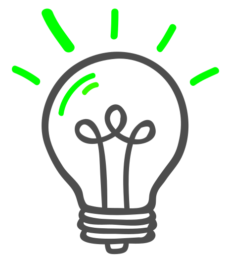

To slide or not to slide,
that is the question?
Is it a button, is it a slider?
The problem
Användaren har svårt att förstå att det är en knapp.
Knappen ser ut som en slider och man vill då dra för att sätta på/stänga av.
Kommer man för långt ut till höger kan man swipa in raderafunktionen.
How might we?
Hur kan vi göra knappen, den gömda slidern
och dess funktioner mer intuitiv?

Solutions
text om vilken funtion
text
text
#1
#2
#3